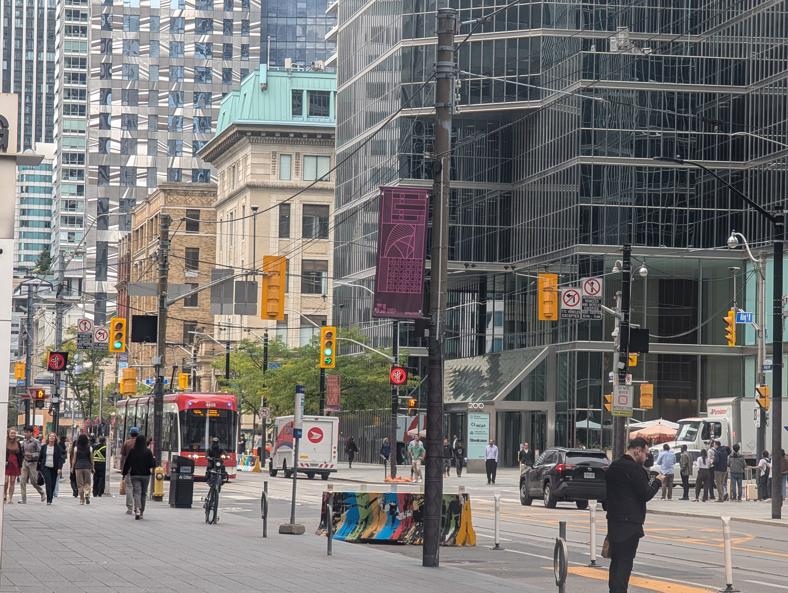
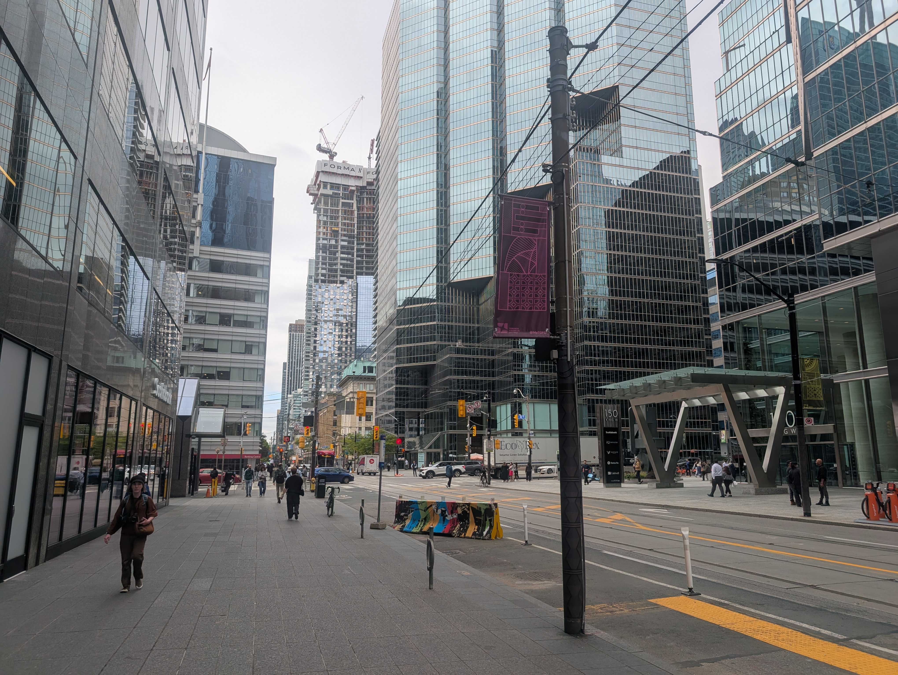
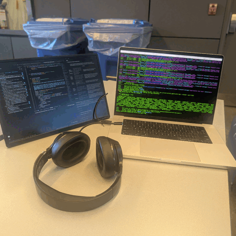

Exploring Perspective, Focal Length, and Center of Projection
Perspective distortion depends strictly on camera distance to the subject. At close range, facial features closest to the lens (like the nose) are disproportionately magnified compared to the ears.
In urban scenes, we start by taking a photo from far down a long path or street while zooming in (telephoto). Next, we walk down the street toward the subject and take a second photo without zoom (wide angle), matching the subject's visual scale.
The first photo displays strong perspective compression. Because the camera is far from both the foreground and background objects, background structures appear abnormally large, flattened, and "compressed" against the foreground. In the second photo, moving significantly closer drastically increases the relative distance ratio, expanding perceived depth.


By stepping backward while simultaneously zooming in, the subject height remains constant while the field of view narrows dramatically, creating a warping background effect.

Animated Dolly Zoom GIF: Captured across 8 sequence stills.